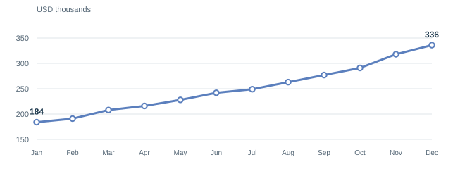
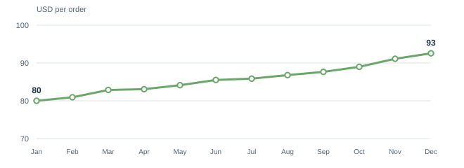
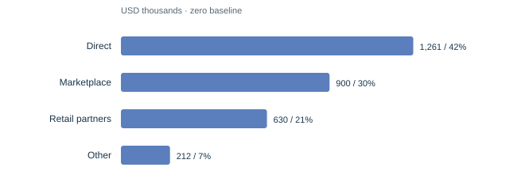
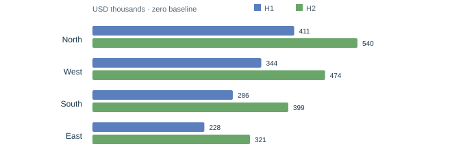
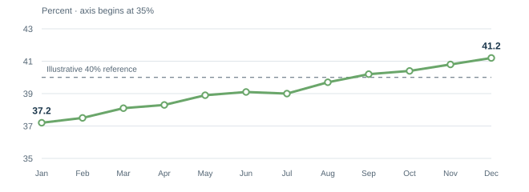
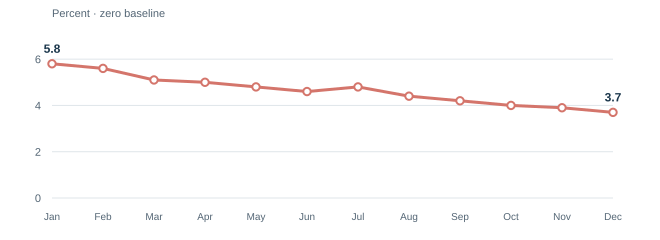

A reproducible commerce report showing how AnyViz’s chart-selection and publication rules turn a small dataset into a consistent, document-ready visual narrative.
$3.003mAnnual revenue
+36.6%H2 revenue versus H1
34,790Annual orders
FIGURE 01Revenue builds steadily through the year

Monthly revenue, USD thousands. The axis starts at $150k to show variation; this is a trend, not a magnitude comparison.
FIGURE 02Average order value rises alongside revenue

Revenue divided by orders in each month. A higher average does not establish a cause; no customer-level data is available.
Use a common visual language without forcing different questions into the same chart. Ranked bars compare channels; paired bars compare two periods within each region.
Reading the sample: Direct accounts for 42.0% of annual revenue. Every synthetic region records higher revenue in H2 than H1.
FIGURE 03Direct is the largest revenue channel

Annual revenue by channel. End labels give USD thousands and rounded share. Bars start at zero; channels sum to annual revenue.
FIGURE 04The second half is larger in every region

Regional revenue in USD thousands. H1 is January–June; H2 is July–December. Paired rows preserve readable period comparisons.
Why these charts?
Aligned, zero-based bars support magnitude comparisons. Direct labels remove the need to estimate values from distant grid lines.
What not to infer
These aggregates do not explain acquisition, retention or regional profitability. More revenue is not evidence of better unit economics.
Margin and returns provide context for the revenue story. They are separate measures, with explicit units and no dual axis to imply a relationship.
FIGURE 05Gross margin moves above the reference line

Gross margin, percent. The dashed 40% line is an illustrative reference, not a real business target. The vertical axis begins at 35%.
FIGURE 06Return rate declines across the sample

Monthly returned-order rate, percent. Zero-based axis. Aggregate rates are supplied in the synthetic data, not estimated from customer records.
Data & calculations
All values are fictional and committed in three CSV files. Revenue, order counts, channel totals and regional totals reconcile in build.py. Average order value = revenue ÷ orders.
Reproduction & scope
Run python3 build.py. SVG charts use AnyViz’s Analytics palette and publication guidance. This is a deterministic reference implementation, not a model benchmark or a promise of one-prompt output.